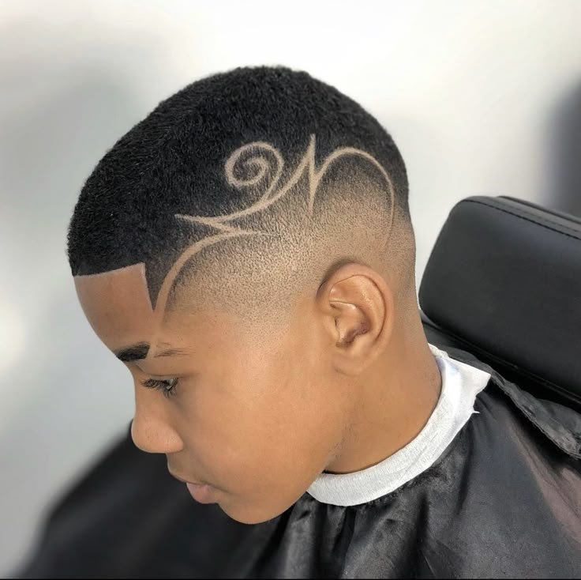

Cut Shop
Cortes com sabor

Cortes com sabor

Pessoal, apresento um dos cortes mais pedidos na barbearia: o Mid Bald Fade com Design Artístico.
A base do corte:
Estamos a trabalhar com um _Mid Bald Fade_, ou seja, um degradê médio que vai até a pele.
A transição começa limpa na zero bem na linha da têmpora e vai subindo suave até encontrar o topo.
Isso dá aquele contraste limpo e moderno, valorizando o formato da cabeça.
O topo:
Em cima mantemos o _brush cut_ ou _corte escovinha_, com aproximadamente lâmina 2.O diferencial: Freestyle Design
Aqui é onde o corte ganha identidade.Acabamento:
Finalizamos com um _Line Up_ ou _Alinhamento_ bem marcado na testa e nas têmporas.Pra quem é esse corte?
Pra quem quer sair do básico e mostrar personalidade. É limpo, estiloso e chama atenção na medida certa.